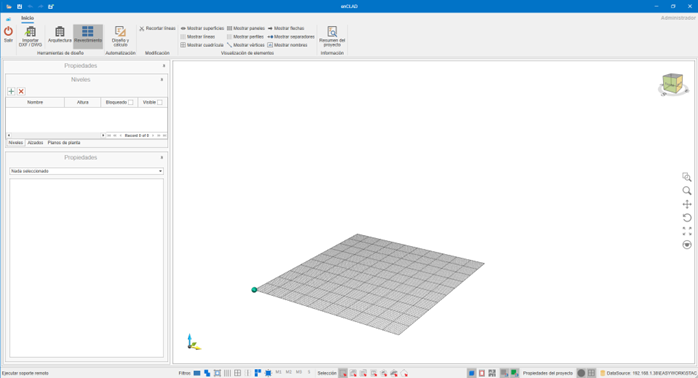
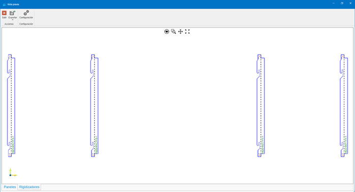
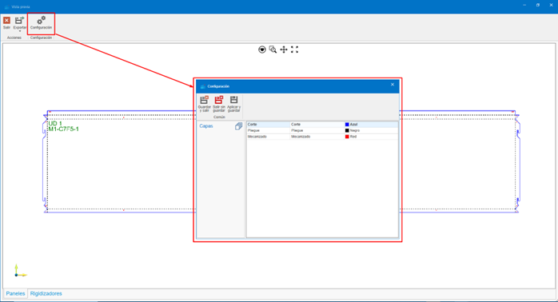
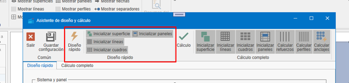
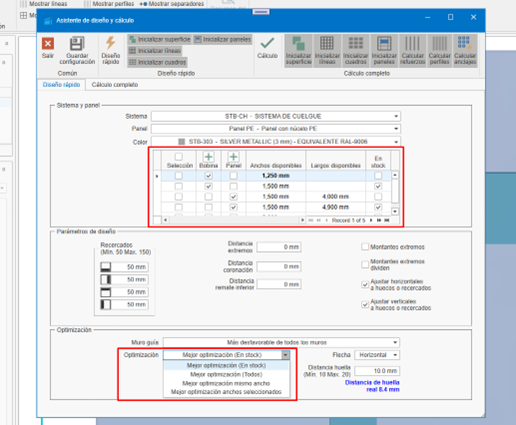
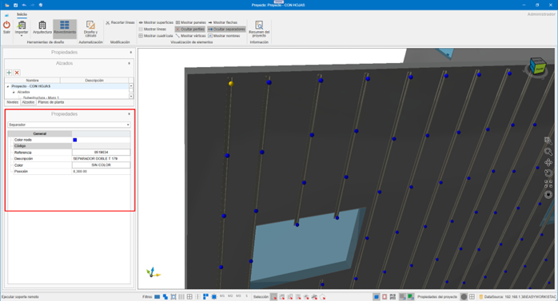
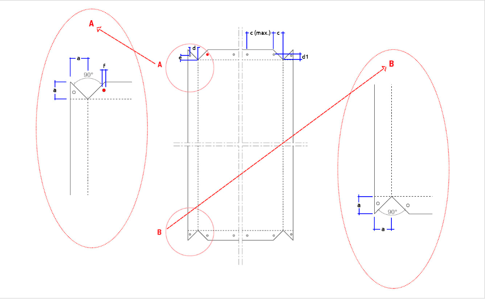

enCLAD
1. Introduzione
Lo scopo di questo documento è fornire conoscenze di base sul funzionamento di enCLAD, per semplificare la gestione dei processi nel rivestimento di un edificio.
Prima di iniziare a lavorare con enCLAD, è necessario disporre di un database con i sistemi e i materiali definiti in enMATERIALS.


2. Nomenclature specifiche di enCLAD
2.1. Linea maestra
Guide utilizzate per il disegno delle impronte dell'edificio o dei montanti intermedi.
- Linee di taglio: colore rosso, continue
- Linee di rinforzo: colore nero, discontinue

2.2. Quadro di rivestimento
Area situata tra le linee.
- Verde: zone da rivestire
- Rosso: zone non rivestite
- Proprietà Rivestire:
Sì / No
Utilizzato per il calcolo automatico dei pannelli dal pulsante Progettazione e calcolo.

2.3. Superficie di rivestimento
Zona visibile del rivestimento, indipendente dal muro strutturale.
Proprietà modificabili:
- Coronamento
- Altezza di coronamento
- Distanza dal muro

2.4. Foro di rivestimento
Questo foro è indipendente dal foro originale nel muro strutturale e dal foro disegnato sulla superficie di rivestimento.
Include proprietà automatiche come ad esempio:
- Contorni
- Stipite
- Architrave
- Davanzale

2.5. File .enclad
Formato proprio di enCLAD per l'archiviazione e lo scambio.
Importante!⚠️ Richiede lo stesso database di sistemi e materiali per aprirsi correttamente.
3. Funzionamento e Navigazione
3.1. LogIn
Schermata di accesso con nome utente e password.

3.2 Home
Vista principale dopo l'accesso all'applicazione.

4. Menu Superiore
Contiene tutte le azioni sul progetto.
4.1. Pulsante Menu
Progetto:
- Apri: Apre un progetto salvato in formato
.enclad. - Salva: Salva il progetto attualmente aperto in formato
.enclad. - Esporta: Esporta le informazioni del progetto secondo il formato selezionato.

Formati di esportazione:
- DWG: Esporta la vista corrente del progetto in DWG. Formato AutoCAD.
- EMF: Esporta la vista corrente del progetto in EMF. Formato immagine file di Windows.
- PDF: Esporta la vista corrente del progetto in PDF. Formato file Adobe (Portable Document Format).
- PDF 3D: Esporta il progetto corrente in PDF 3D. Formato 3D dei file Adobe.
- STEP: Esporta il progetto corrente in STEP. Standard for the Exchange of Product Data, noto anche come ISO 10303.
- STL: Esporta il progetto corrente in STL. Formato di trasmissione dati standard per eccellenza nell'industria della prototipazione rapida.
- XML: Esporta il progetto corrente in XML. (Extensible Markup Language). Memorizza i dati in modo che possano essere letti sia da computer che da persone. Un file .xml è un formato di dati basato su testo compatibile con la maggior parte degli editor di testo.
- OBJ: Esporta il progetto corrente in OBJ. L'estensione OBJ è un formato di file immagine 3D.
- IGES: Formato di file per software di Computer Aided Design (CAD).
- WebGL: Standard web aperto per visualizzare grafica in qualsiasi browser compatibile, senza bisogno di plugin aggiuntivi.

4.2. Esporta pannelli
Esporta i pannelli sviluppati in formato DWG, secondo i valori selezionati nella finestra di esportazione, pronti per essere inviati al taglio.



- Configurazione dei layer per l'esportazione in DWG.

- Esporta pannelli in DWG
- Esporta irrigidimenti in DWG
- Esporta pannelli in XML
- Esporta irrigidimenti in XML

4.3. Elimina rivestimento
Il menu a discesa Elimina rivestimento offre diverse possibilità. Eliminare parti di un rivestimento, o l'intero rivestimento.
Opzioni:
- Linee: Ci dà la possibilità di eliminare le linee di rivestimento dal nostro progetto. Eliminare le linee di rivestimento implica l'eliminazione dei materiali che dipendono da questa linea, come montanti o ancoraggi.
- Quadri: Eliminando i quadri di rivestimento non si elimina alcun materiale. Questi quadri sono solo le aree definite che verranno pannellizzate durante il calcolo dei pannelli. Una volta creati i pannelli, non ne avremo bisogno e potremo eliminarli.
- Fori: Elimina i fori dalla superficie di rivestimento. Se abbiamo già i pannelli necessari, non è necessario avere i fori di rivestimento.
- Pannelli: Elimina i pannelli dal progetto.
- Rivestimento completo: Elimina il rivestimento dal/dai muro/i selezionato/i, o in mancanza da tutti i muri. Superficie di rivestimento e suoi fori, linee di rivestimento, quadri di rivestimento, pannelli, montanti, ancoraggi, ...

4.4. Elimina progetto
Elimina tutto il contenuto del progetto.
5. Strumenti di Progettazione
Permettono la costruzione dell'edificio.
5.1. Importa DXF / DWG
Importa:
- Livelli
- Muri
- Fori
- Linee maestre

Requisiti DXF / DWG
- Muri come polilinee chiuse a 4 vertici.
- Fori come polilinee chiuse
- Testo interno per il nome del muro: Name: "Muro Nord"
- Livelli definiti da riquadri con:
- N: "Nome Livello", "Altezza"


6. Architettura
6.1. Progetta muri
Creazione manuale di muri sul livello selezionato.

6.2. Progetta fori
Fori in muri strutturali o superfici di rivestimento.

6.3. Modifica vertici
Modifica di vertici indipendenti di muri strutturali, fori e della superficie di rivestimento.

7. Rivestimento
7.1. Automazione
7.1.1. Progettazione e calcolo
Automazione del calcolo del rivestimento dell'edificio. Utilizzando la procedura guidata di progettazione e calcolo possiamo ottenere in modo automatizzato il rivestimento necessario per i muri che abbiamo selezionato in quel momento, o per tutti i muri dell'edificio in mancanza.

- Verranno disegnate le linee importate dal file CAD e verrà creata una superficie di rivestimento se necessario.
- Modulazione importata.

7.1.2. Progettazione rapida
La progettazione rapida ci permette di ottenere un calcolo della modulazione dell'edificio, per ottenere un'approvazione iniziale da parte dell'architetto/cliente coinvolto.

Opzioni:
- Inizializza superficie: Inizializza una superficie di rivestimento, alla distanza indicata in base all'arretramento della facciata indicato. Questo arretramento sarà a faccia vista del pannello.
- Inizializza linee: Inizializza le impronte orizzontali e verticali che definiranno il nostro modello. Nella progettazione rapida vengono calcolate solo le impronte (linee di taglio). Le linee possono essere di taglio o di rinforzo. Le linee di taglio definiranno le impronte del modello, le linee di rinforzo definiranno i montanti intermedi. Le linee saranno calcolate in base ai fori e alle dimensioni dei pannelli scelti.
- Inizializza quadri: I quadri saranno calcolati in base alle linee di rivestimento e saranno gli spazi definiti tra di esse.
- Inizializza pannelli: I pannelli saranno calcolati per ciascuno dei quadri del progetto, a patto che non abbiamo impostato alcun quadro come 'Non rivestire'. Terrà conto dei fori o dei contorni che si trovano al loro interno. Trattandosi di una progettazione rapida, questo calcolo dei pannelli non prevede ali o lavorazioni. Ci mostrerà solo una vista frontale della modulazione calcolata.
Nota: Non include ali o lavorazioni.
7.1.3. Calcolo completo
Il calcolo completo ci fornirà sia la modulazione, sia il calcolo reale dei pannelli e tutta la sottostruttura necessaria per realizzare il nostro progetto. I controlli che troviamo da gestire differiscono dai controlli della progettazione rapida.

Include:
- Inizializza pannelli: Saranno calcolati come nella progettazione rapida, ma calcolandoli completamente, ci fornirà le ali necessarie e altre informazioni da inviare al taglio.
- Calcola rinforzi: Calcola i rinforzi necessari tra le impronte.
- Calcola profili: Disegna i profili necessari.
- Calcola ancoraggi: Disegna gli ancoraggi necessari.
7.2. Parametri di Progettazione Rapida

- Sistema: Selezione del sistema di rivestimento.
- Pannello: Selezione del pannello per rivestire.
- Colore: Colore del pannello.
- Selezione Dimensioni: Dimensioni pannello disponibili.

- Contorni: Contorni da applicare sulla superficie di rivestimento. Possono essere modificati successivamente selezionando la superficie di rivestimento.
- Distanza estremità: Distanza dell'impronta/rinforzo dalle estremità.
- Distanza coronamento: Distanza dell'impronta dal coronamento della facciata.
- Distanza inferiore: Distanza dell'impronta dal bordo inferiore della facciata.
- Montanti estremi: Indica se posizionare o meno il montante alle estremità.
- Montanti estremi dividono: Indica se convertire il montante d'estremità in un'impronta.
- Regola orizzontali a fori o contorni: Regola le impronte orizzontali su fori o contorni.
- Regola verticali a fori o contorni: Regola le impronte verticali su fori o contorni.
- Muro guida: Indica il muro da cui verranno stabilite le impronte orizzontali. Se non si sceglie nessuno, ogni muro verrà calcolato separatamente.

- Ottimizzazione: Indica come utilizzeremo i relativi pannelli o bobine.
- Freccia: Indica la direzione della freccia del pannello per l'ottimizzazione.
- Lunghezza massima: Lunghezza massima del pannello da utilizzare.
- Distanza impronta: Larghezza dell'impronta. Inizialmente ottenuta dal sistema scelto, e qui vengono indicati i parametri minimo e massimo.
- Modalità di calcolo: Migliore ottimizzazione.
7.3. Parametri di Calcolo Completo

- Montante: Montanti disponibili in base al sistema. Intercambiabile dopo il calcolo. Successivamente, può essere modificato selezionando la superficie di rivestimento.
- Montante intermedio: Montanti intermedi disponibili in base al sistema. Successivamente, può essere modificato selezionando la superficie di rivestimento.

- Arretramento facciata: Arretramento del rivestimento alla faccia vista del pannello. Successivamente, può essere modificato selezionando la superficie di rivestimento.
- Spessore isolante: Spessore dell'isolante da utilizzare. Successivamente, può essere modificato selezionando la superficie di rivestimento.
- Distanziatore: Distanziatori disponibili in base all'arretramento della facciata. Successivamente, può essere modificato selezionando la superficie di rivestimento.

- Distanza distanziatori: Distanza di calcolo per i distanziatori necessari. Successivamente, può essere modificato selezionando la superficie di rivestimento.
- Distanza montanti: Indica la distanza massima tra montanti. Successivamente, può essere modificato selezionando la superficie di rivestimento.
- Distanza staffe: Indica la distanza massima tra staffe in un pannello a sospensione. Nel caso di un pannello rivettato, vedremmo la distanza massima tra rivetti.
- Architrave: Architravi disponibili nel sistema. Successivamente, può essere modificato selezionando la superficie di rivestimento.

- Stipite: Stipiti disponibili nel sistema. Successivamente, può essere modificato selezionando la superficie di rivestimento.
- Davanzale: Davanzali disponibili nel sistema. Successivamente, può essere modificato selezionando la superficie di rivestimento.
- Angolo: Angoli disponibili nel sistema. Successivamente, può essere modificato selezionando la superficie di rivestimento.
- Coronamento e altezza: Coronamenti disponibili nel sistema e distanza che deve superare il muro strutturale. Successivamente, può essere modificato selezionando la superficie di rivestimento.
- Chiusura: Chiusure disponibili nel sistema. Successivamente, può essere modificato selezionando la superficie di rivestimento.
- Bordo inferiore: Bordi inferiori disponibili nel sistema. Successivamente, può essere modificato selezionando la superficie di rivestimento.
8. Visualizzazione Elementi
Permette di mostrare o nascondere:
- Superfici
- Linee
- Griglia
- Pannelli
- Profili
- Vertici
- Frecce
- Distanziatori
- Nomi
9. Riepilogo Progetto
Mostra l'elenco dei materiali necessari (distinta) per realizzare il progetto. Questo elenco può essere copiato e incollato in un file Excel.

10. Barra Inferiore

- Supporto remoto (TeamViewer)
- Filtri: Filtra la selezione delle entità, secondo i filtri applicati.
- Modalità di selezione: Passa da una modalità di selezione all'altra.
- Viste: Blocco, filo di ferro, pianta. Mostra una vista in blocco del progetto 3D.
- Snap a griglia: Aggancia il puntatore alla griglia.
- Snap a oggetto: Aggancia il puntatore alle diverse entità del progetto.
-
Proprietà progetto: Permette di modificare alcune configurazioni del progetto e impostare alcuni valori predefiniti.


-
Origine: Mostra o nasconde il punto di origine nel progetto.
- Griglia: Mostra o nasconde la griglia del progetto.
11. Pannello Laterale Sinistro

11.1. Livelli
Gestione e visibilità dei livelli.

11.2. Prospetti
Definizione dei prospetti del nostro progetto. Possiamo averne di due tipi, di sottostruttura o di modulazione. A seconda del tipo scelto visualizzeremo elementi diversi.

- Modulazione e disegni


- Sottostruttura e disegni


11.3. Piante
Definizione dei piani del progetto.


11.4. Proprietà
Pannello delle proprietà dell'elemento selezionato. Esempi:




12. Istruzioni per l'uso
12.1. Scorciatoie da tastiera
CTRL + A→ Seleziona tuttoCTRL + I→ Inverti selezioneCTRL + CANC→ EliminaCTRL + F→ Zoom automaticoCTRL + + / -→ Zoom- Frecce → Rotazione
ESC→ Annulla
12.2. Comandi tattili
- Doppio tocco → Selezione
- Trascina → Rotazione
- Pizzico → Zoom
- Due dita → Spostamento
- Rotazione con due dita → Rotazione senza capovolgimento
13. Sistemi di Facciata Ventilata in enCLAD
Ci sono 4 sistemi di facciata ventilata disponibili in enCLAD:
13.1. Sistema a sospensione
Il sistema a sospensione è un sistema di ancoraggio meccanico nascosto.


13.2. Sistema maschio-femmina
Il sistema maschio-femmina è un sistema di assemblaggio per incastro.


13.3. Sistema incollato
Il sistema incollato è un sistema con adesivo strutturale.


13.4. Sistema rivettato
Il sistema rivettato è un sistema di fissaggio meccanico a vista.


14. Creazione Materiali in enMATERIALS
Dal modulo enMATERIALS verranno creati i materiali per ogni sistema di facciata ventilata.
Per maggiori informazioni, segui questo link: Creazione di sistemi e materiali enCLAD
 Español
Español
 English
English
 Italiano
Italiano
 Português
Português